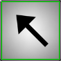
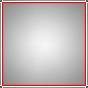

Hier dargestellt ist eine Übersicht des Spielfeldes.

Dies ist ein Stern, die im Spielfeld zu finden sind.
Dies ist ein Pfeil, in dessen Zeigerichtung sich mindestens ein Stern befindet.
Die Deaktivierung eines Pfeils wird durch den Spieler veranlasst und wird dazu benutzt, wenn der Zeigerichtung alle Sterne gefunden sind.
Das Ausschlusssymbol stellt beim Lösen des Puzzles ein Feld dar, auf dem der Spieler keinen Stern vermutet.
Eine Ziffer zu Begin einer Spalte oder einer Zeile, gibt die Anzahl der Sterne an, die in dieser Zeile oder Spalte vorhanden ist.
Die Deaktivierung einer Ziffer wird durch den Spieler veranlasst und wird dazu benutzt, eine gelöste Zeile oder Spalte anzuzeigen.
Wird auf ein Feld mit der Maus gezeigt, wird dieses mit einem weißen Rahmen zur Hervorhebung der aktuellen Position dargestellt.

Wird auf einen gesetzten Stern die Maus bewegt, werden die Pfeile grün hervorgehoben, die auf diesen Stern zeigen.

Ist die Option Fadenkreuz eingeschaltet, wird das Feld, auf das die Maus zeigt, rot hervorgehoben. Die sich in der Horizontalen und Vertikalen befindlichen Felder werden weiß umrahmt.
Wird mit der Maus auf einen Pfeil gezeigt, werden alle Felder in Zeigerichtung mit einem gelben Rahmen hervorgehoben, die einen Stern enthalten können.
Das Steuerelement zeigt den gewählten Avatar, den Spielernamen, die Anzahl der vermuteten Sterne, die Gesamtanzahl der Sterne. Ebenso sind die benötigten Versuche zum Lösen des Puzzles dargestellt, sowie die bisher benötigte Zeit.
Mit dem Schalter "Tracking-Modus" wird der Tracking-Modus ein- bzw. ausgeschaltet. Darunter befindet sich bei ausgeschaltetem Tracking-Modus die Schaltfläche "Zurück zum Fehler".
Bei eingeschalteten Tracking-Modus sind die Schaltflächen "Zurück zum letzten Trackingpunkt" und "Setze Trackingpunkt" sichtbar. Die Fähnchen darunter stellen die Anzahl der gesetzten Tracking-Punkte dar.
Created with the Personal Edition of HelpNDoc: Free Kindle producer